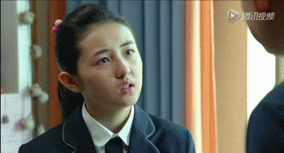
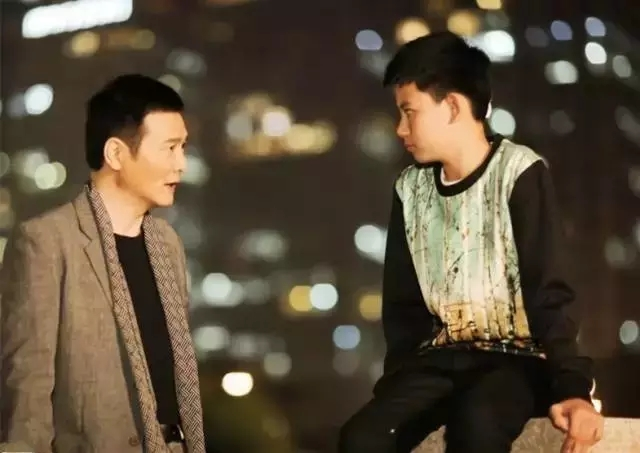
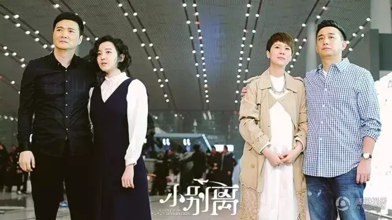
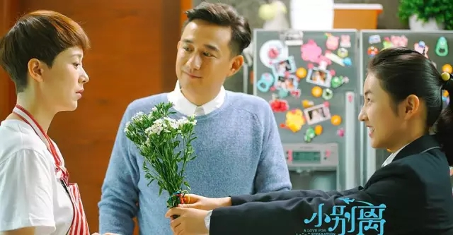
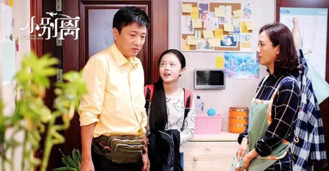
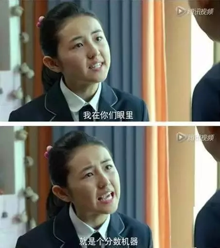
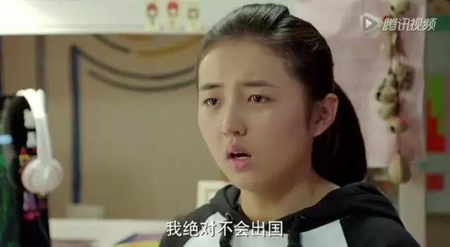

互惠动态
|
|
《小别离》的大智慧：让孩子出国留学，就该“有钱任性，没钱认命”？
最近一部电视剧《小别离》刷爆了朋友圈，这部剧涉及到很多亲子教育问题。孩子的留学问题、青春期问题在这部剧里都有体现，堪称教育百科全书！《小别离》火了，不仅是因为有TFboys，也不仅因为它炮轰了中考和留学，更是因为它接地气，反映了中国家长的普遍焦虑。三个孩子，分属于三个不同的家庭——平民、精英、富豪——从他们的家庭格局，似乎看到了自家孩子未来的走向。

这究竟是怎样的一部剧呢？
▼
《小别离》是讲述亲子之间相处的故事，只不过这次聚焦的是处于青春叛逆期的十几岁孩子，和他们焦虑的父母亲。剧里有3个正在读初三的同窗好友：乖乖惹人爱的方朵朵、学渣张小宇和学霸金琴琴。

他们的学习成绩分属优、良、差三等，而他们的父母正好处在社会的三个阶层：张小宇的爸爸张亮忠是不差钱儿的土豪。
方朵朵的爸爸方圆是一名眼科医生，妈妈童文洁是一家公司的中层，两人工作稳定，衣食无忧，城市中产阶级妥妥的。
金琴琴的爸爸是出租司机，妈妈吴佳妮通过个人努力，由一名底层护工奋斗成社区医生，家庭经济条件一般，属于平民阶层。

这三个不同阶层的家庭，在面对孩子升学、留学、青春期，所作出的不同反应，似乎每个人都能在剧里面对号入座。
剧中金琴琴的父亲金志明一句“人有钱任性，咱没钱认命”，虽然生活在21世纪的我们，还是禁不住打了一个激灵。
三个家庭其实代表的是三个不同的阶层的父母对于孩子教育潜移默化的影响。
富豪家庭：张亮忠与蒂娜家
蒂娜不仅只是年轻漂亮，她还有研究生学历。她会在学校为了捍卫小宇而出头，也愿意接受小宇诚恳的道歉，这个后妈是通情达理的。
当与小宇同一屋檐下，矛盾升级时。“有钱真好”上线了：蒂娜可以给小宇的房间加隔音，也有钱把小宇送到国外眼不见为净。
这也不失为一种解决方法。预感编剧会给富二代的小宇，一个学业、家庭两团圆的结局。
精英家庭：方圆与童文洁家

黄磊饰演的方圆在《小别离》中几乎无可指摘，但海清饰演的朵朵妈文洁却在网上被炮轰，这很科学！
朵妈为啥这么奇葩？剧中介绍，朵妈其实是个孤儿，“只有朵朵一个有血缘关系的亲人”，相信朵妈的童年并不富裕。
但朵爸方圆家境不错，朵爸大学读了医学院，朵姑方欢留学美国。方圆在剧中的种种育儿观念，无论是倾听式沟通，还是与朵朵做朋友的方式，都让孩子减少了逆反，促进了和谐。
方圆不仅是中产阶级的代表，也是中产阶级“二代”的代言人，但还是在告诉我们，有钱不一定有眼界，而没眼界一般教育不好孩子。
平民家庭：金志明与佳妮家

金志明不思进取，地球人儿都知道了。佳妮从小学习成绩好，但姐姐芳妮嫁个美国人，让佳妮认为“干得好不如嫁得好”，她对美国有不切实际的幻想和羡慕，进而引发家庭危机。
所以，到底要不要嫁给穷人呢？贫穷真的会毁了一个孩子么？
培养孩子的自信，长期生活在贫穷中的父母，很难有自信心，而自卑的情绪非常容易传染下一代。很多家长自身眼界和追求有限，但却以不切实际的愿景为标杆，扼杀了孩子的选择权。
有个豆瓣很火的小组叫“父母皆祸害”，虽然父母各有各的时代局限，但那些愚昧无知、狡猾贪婪、低俗无理、斤斤计较，会因为他们为人父母而烟消云散么？
当然物质并不是决定性的。只有思想的贫穷才最可怕，因为它会让你“认命”。有些人很穷，但穷得有风骨、有坚持、有思想，他们照样能教育出很好的小孩。
父母努力提升自己，孩子才能受到积极的影响
在最后，姑且大胆预测一下，15年后，张小宇继承了他爸的公司，金琴琴研究生毕业后成为张小宇公司的管理培训生，而方朵儿成了作家、编剧，开启了自己的创作生涯——阶层之分，让教育也不能绝对公平。
父母的阶层差异，以及随之而来的知识水平、认知能力以及教育方式的不同，都会在潜移默化中体现在孩子身上。父母自身的局限性，甚至也容易限制住孩子能达到的高度和深度。
“天下所有的爱都是为了团聚，唯有父母之爱指向别离”。所以，还是那句家长们耳朵都听出了老茧，但的确十分有道理的话：父母自己努力提升自己，孩子才能受到积极的影响。
看了《小别离》，你还会让孩子出国留学吗？
现在很多家长都比较热衷送孩子出国留学，觉得国外的教育比国内的教育优秀，孩子留学回来后会更有竞争力。
在《小别离》里面的家庭都面临着孩子出国留学的问题。比如方朵朵一家，朵朵的妈妈文洁对女儿要求非常严格，希望女儿成为人群中的佼佼者，只要女儿成绩稍微有点下降就会引发家里的一场大战。

文洁最初希望女儿可以出国，但是知道她朋友的女儿萝丝在国外遭受校园暴力，情绪很不稳定的时候，文洁打消了送女儿出国的心思。但是朵朵的爷爷却瞒着儿子和媳妇想要把孙女送到国外留学，想让孙女在国外可以受到更好的教育。

而另一对家庭的孩子因为爸妈离婚，再加上要重新接受一个全新的母亲，所以孩子变得比较敏感和叛逆，经常与家长发生冲突，于是爸爸就想让孩子出国留学，避免家庭纷争。
《小别离》生动地反映了中国家长的普遍焦虑，还有，大家遭遇的现实问题。
现在中国家长希望孩子出国，无非是出于以下几种考虑：
躲避残酷的竞争压力；
给孩子一个相对轻松快乐的童年；
对清洁的空气，安全的食品、水和环境的追求；
希望孩子开阔视野，增长见识；
希望孩子进入世界一流的大学，未来出人投地，把自己从现有的阶层上，再拔高一个台阶。
这些想法全都无可厚非。
但我想说的是，在让孩子出国之前，学生和家长都做好充分的准备了吗？剧中，朵朵妈的顶头女上司，早年就把女儿送去了美国，结果孩子在美国遭遇校园暴力，罹患了严重的抑郁，弄得女上司懊悔不已。
出国留学意味着孩子进入到一个全新的环境，面对的是陌生的人群、陌生的语言、陌生的环境。一切都是陌生的，而孩子能否适应这个环境是一个很大的问题。毕竟出国留学不是简单的待几天而已，孩子需要在一个陌生的环境里生活。他需要重新建立自己的社会关系、需要重新交朋友、需要重新了解这个国家的文化。在一切都是未知的情况下，孩子不一定能够适应国外的生活。
所以在孩子出国留学之前可以请一个外国互惠生到家里来，跟您的孩子生活相处一段时间，尽早适应国外的生活环境和思维方式，还能锻炼孩子的外语口语能力。

关于互惠，您了解得够多么？
请外国学生来家庭照顾孩子，辅导孩子外语？
只了解这些是不够的！
获取更多信息请参考以下方式：
联系ASC：
电话：86-21-61116069(上海中心）
86-25-66065662（南京中心）
全国家庭均可申请！
手机：15601666586（可加微信）
Q Q：3259637585
微信：asc-center
邮箱：info@asc-center.com
网站：www.asc-aupair.com

感谢您对我们的关注